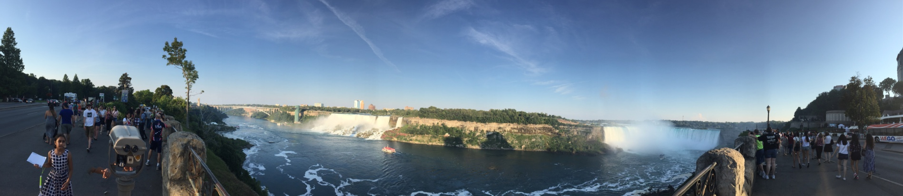

There are many means to see the unseen and know the unknown, but travelling is the best of all.
Here are some paranomic shoots, I took while traveling

Observortory, Los Angles
Griffith Observatory is a facility in Los Angeles, California, sitting on the south-facing slope of Mount Hollywood in Los Angeles' Griffith

Downtown, Chicago
Chicago-style hot dogs, Chicago-style (deep dish) pizza, Maxwell Street Polish Sausage, jazz music, and 1920s gangsters like Al Capone. Chicago is also known for interesting architecture like the Sears Tower, many museums, and many loyal sports fans.

Las Vegas, Nevada
Legalization of gambling in 1931 encouraged other parts of the country to request the recall of Nevada’s statehood. Today there are forms of legalized gambling in 48 of the 50 states.

Doha, Qatar
Qatar is a peninsular Arab country whose terrain comprises arid desert and a long Persian (Arab) Gulf shoreline of beaches and dunes. Also on the coast is the capital, Doha, known for its futuristic skyscrapers and other ultramodern architecture inspired by ancient Islamic design, such as the limestone Museum of Islamic Art. The museum sits on the city’s Corniche waterfront promenade.
Niagra Falls, Canada
Niagara Falls is the collective name for three waterfalls that straddle the international border between the Canadian province Ontario and the American state of New York. They form the southern end of the Niagara Gorge.

Chicago